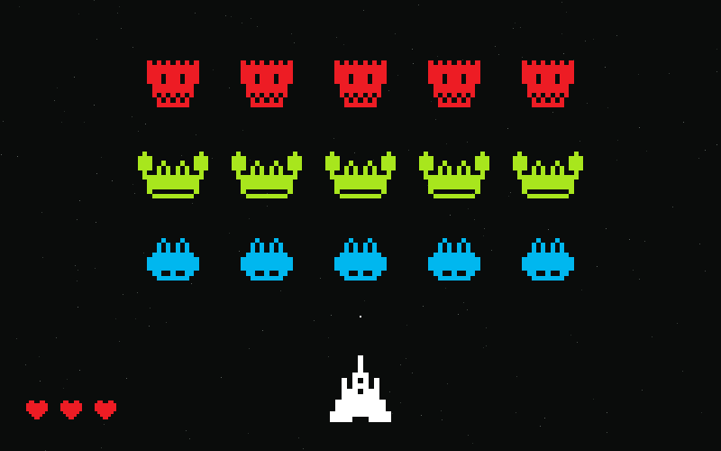

Unity · Arduino · Duo project
Galactica
A Space Invaders style game you play with a controller we wired up ourselves.

The sprites above are the real game art, drawn by hand for this project.
Overview
For the physical computing project we had to build something you control with real hardware instead of a keyboard. We made a wave-based shooter and a controller to go with it: a lever to steer, a button to shoot, a small speaker for sound and a vibration motor that buzzes when you get hit.
The game is two programs talking to each other. The Arduino reads the hardware and sends
words like LEFT over the serial port; Unity listens and turns those into
movement and shots.
Features
- Move left and right, and shoot projectiles that damage enemies
- Different enemy types — some only fly, others shoot back
- A wave system that keeps sending new rows of enemies
- Health: you lose a heart when an enemy hits you or crosses the bottom line
- Win by clearing the last wave, lose when your health runs out
- Sound and vibration on a kill and on damage
The controller
- A lever for steering and a button to fire
- A second button to go back out of the game
- A piezo speaker for the sound effects
- A vibration motor for feedback when you take damage
The Arduino sketch reads all of those pins and writes simple lines to the serial port. Keeping the messages that plain made it easy to test the game without the controller, and easy to test the controller without the game.
Getting the two halves to talk
Before any of it looked like a controller, it had to work at all. These two clips are from that stage: the wiring on the breadboard, and the same input moving an object in Unity.
What I learned
- Getting two separate systems to talk to each other over a serial connection
- That hardware input is messy — a lever does not send clean events like a key does
- Building a wave system that stays fair as it gets harder
- Designing a game around the controller you have, instead of the other way around